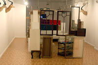
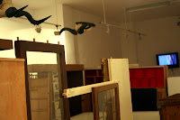
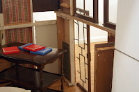
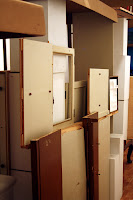
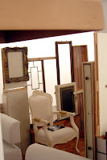

Efecto, Afecto. Intervention Installation
lunes, 1 de octubre de 2012
O+O Gallery, Valencia
September 21 through,october 13, 2012
Opening Reception, Friday, September 21/ 2012, Friday from 20:00 pm.
September 21 through,october 13, 2012
Opening Reception, Friday, September 21/ 2012, Friday from 20:00 pm.
{kind=link}

{kind=link}

{kind=link}

{kind=link}



{kind=link}

The Gallery O+O, (Orient+ Occident) Valencia, Spain, begins the 2012 season program with the individual exhibition of PS3* aka Pedro Sanchez III .
Multidisciplinary artist Madrid born and settled in New York for many years, he lived also a few years in Japan, and exhibited in cities like Tokyo, New York, Madrid, Valencia (Spain) and London.
Aesthetic of Negativity, the reversal of the utopia, where the
performance naked of its own attributes, to a certain extent, the
impossibility to be representational in the commercial value and at the
same time, searching a space not to be contained in the margins of a
cultural condition, where ideologies and strategies have merged a
cultural conformism of liberal opposition more likely surrendered to the
cultural economic productivity which creates a marginal space for
idiosincrasias out of sink".
Disobeying the norms that for very obvious reasons reflect the conservative logic of its underlying economic(economical) values. he is a committed artist and an artist who integrates his creations with the times in which we live. An artist who makes us reflect, think, something fundamental between other things that presents the art, and the power of transformation to challenge things.
'This
multidisciplinary project is a complex body of work with a new
experience that had never been consolidated as presentation of the work
of PS3 * before, which mutates and evolves in response to its own
evolution," says the artist.
Who´s
work moves along a wide range of media, from rather huge installations
of ephemeral construction to oil paintings on canvas, through
photography and moving image movies created on digital format, video. A
reflective and plastic experimentation where the articulation of space
becomes a volatile game. Installations created with recycled materials,
including photographs, video screening projections and painting of
abstract language that plays with balance and a grayish color gamut
creating disturbing tension, are a good example of the richness of this
new project that mixes essays, research and previous work with new
proposals.Different geometric shapes, materials, textures, brackets... open to all kinds of reflections on poverty, habitability, society, economy, environment, political... A courageous Artist in its alternatives forms challenging the artistic model representation.